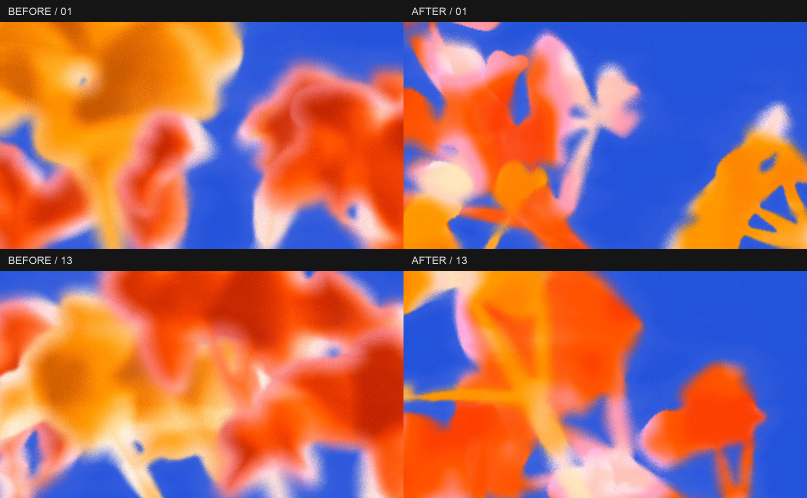

Ember · Cluster · 4 растения · 1920 × 1080. Те же 20 seed, что в первой серии. Настройки сохранены; изменён алгоритм.
Grain 49 · Size 1 · Softness 50 · Edge variation 80 · Contrast 120 · Glow 10 · Coverage 10 · Halo 100.
Предыдущая серия · До / после на одинаковых seed
Изменено: четыре асимметричных схемы композиции; соцветия разного масштаба; неравные лопасти и изогнутые стебли; крупные цветовые поля вместо внутренних теней; цветное распыление в переходах и более выраженное чередование мягких и собранных краёв.
До / после: одинаковые настройки и seed. Слева прежний алгоритм, справа новый.

До референсов ещё остаётся разница: ветвление у нас регулярнее, оттенки Ember теплее, а в некоторых композициях стебли читаются отчётливее. Свет больше не обводит каждый лепесток.
Загрузка…